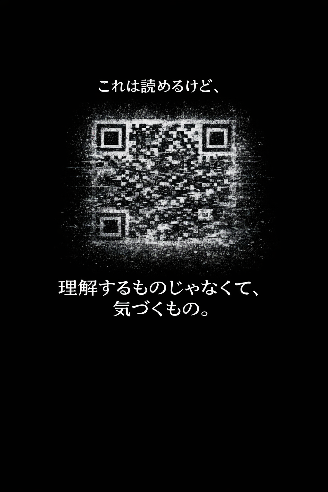
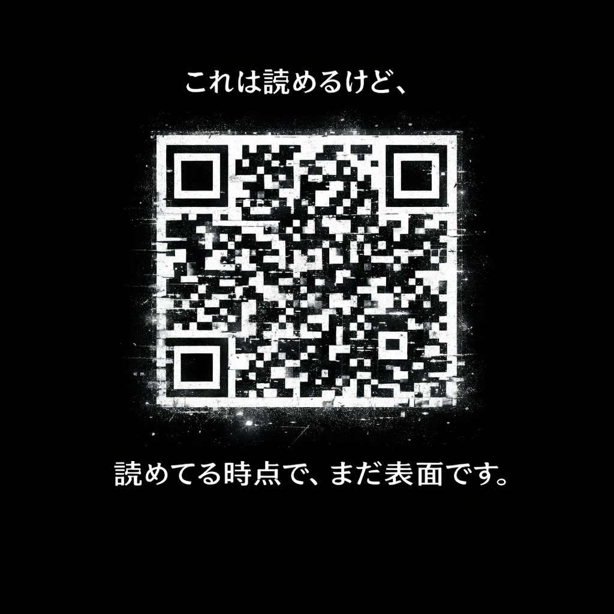
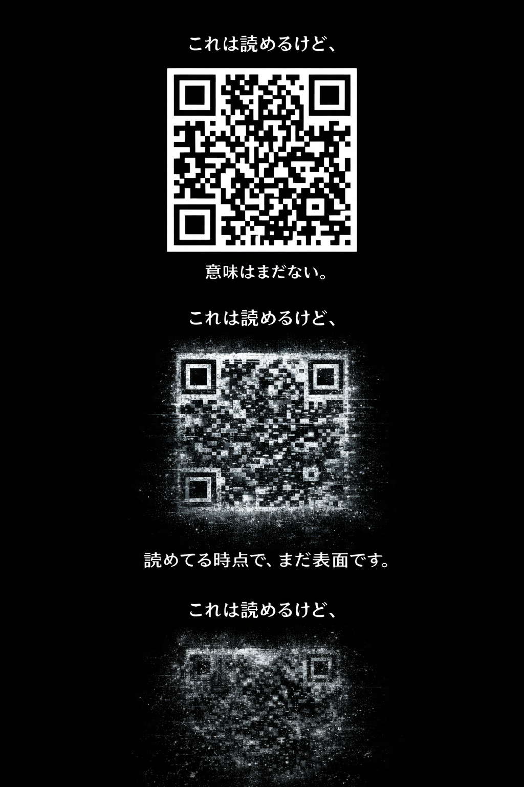
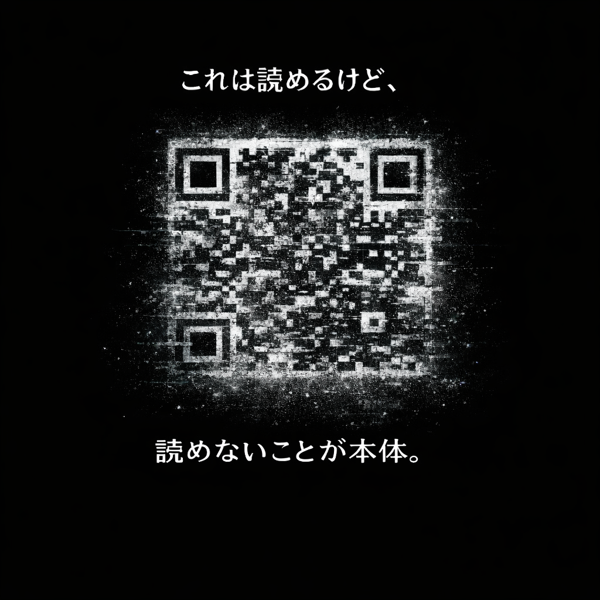

observation 05 / fog code
これは読めるけど、

理解するものじゃなくて、気づくもの。
phase 01
読める。
QRコードは、読める。白と黒の配置は情報になっていて、 機械はそこから答えを取り出せる。

phase 02
でも、まだ表面。
読めた瞬間にわかるのは、入口だけ。そこに何を感じたのか、 なぜ気になったのかは、まだ霧の中にある。

phase 03
霧が濃くなる。
ノイズは邪魔ではなく、感覚の輪郭を浮かび上がらせる。 はっきりしないからこそ、自分がどこに反応しているかが見えてくる。

mori lab note
情報は読める。
感覚は、霧の中で見つかる。
これは解読するページではなく、観測するページです。 答えに急がず、読める部分と読めない部分の間で、少しだけ立ち止まる。
森研究所へ戻る